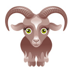
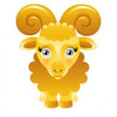
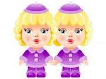
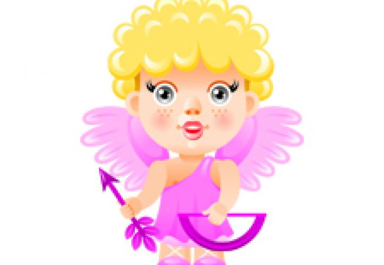

Ești: /
Zodia Țapului - LUNA LUI GERAR (ianuarie)
Cine se va naște sub această zodie va fi dulce la vorbă, lungăreț la obraz si rumen. Frumos la căutătură, muncitor, viclean, lacom, gânditor, tăcut, iubitor de avuție, mânios, sărăcăcios, foarte păzitor de taine. Căutătura lui îndreptată tot la pământ, nasul lat și cârnos, tare în genunchi dar lesne se îmbolnăvește. Semn va avea în piept sau într-un genunchi sau în obraz, va fi înalt, la vorbe multe va făgădui si puțin va da. Născocitor de pricini, mâhnit la fată, când va gândi ceva va uita lesne. Plecat la griji și la jurăminte neînfricoșat, nepăsător, de pedepse fricos, nu asa bun la negustorii dupa cum vrea se se arate, fățarnic si îndemânatic la fapte rele.
Zodia Udătorului - LUNA LUI FĂURAR (februarie)
Cine se va naște în această lună este minunat la obraz, vorbitor si binepovătuitor. Va fi slab la sânge, blând la vorbe, la trup drept, dar una va vorbi si alta va face. Va fi cuminte, smerit, milostiv, credincios, gânditor la lucruri mari si norocos. Îi va rămâne mare moștenire de la rudenii. Frumos la trup, cu niste vine ieșite în fată, blând, cu mintea înaltă si bun chivernisitor. Copilul de parte bărbătească va fi iubitor de învătături, când se gândeste la ceva se uită melancolic. Se va însura tânar, dupa 30 de ani va petrece viața mai bună si fericită. Copila de se va naște sub acest semn, va fi veselă. Trebuie să se ferească de ape, de bărbatul cel dintâi se va lipsi si va muri de o fiară cu patru picioare. Să se păzească de fiare sălbatice si de câini turbați. În general, cel născut în această zodie, va fi gânditor, iubitor de învătătură, care îi va aduce bogăție.
Zodia Peștilor - LUNA LUI MĂRȚISOR (martie)
Cine se naște sub acest semn al Peștilor nu va fi nici mare nici mic, scurt la grumaz, minunat la fața, frumos la statură, drept, bun, plănuitor. Când se supară se îngălbenește, mândru si îndrăzneț, si plecat către învătătură. Va avea un semn la mâna sau la față, mare la chip, nasul de mijloc, buzele cărnoase, voinic si viclean. Pe nimeni nu va crede, se va lăuda cu învătătura, din țara lui va călători si de la străini multă bogăție va câștiga. Iar copilele ce se vor naște în această zodie vor fi mânioase si iubitoare de pricini, înșelătoare, iubite de oameni, de bărbatul cel dintâi se vor despărți si se vor însoți cu un altul, care li se va părea mai bun.
Zodia Berbecului - LUNA LUI PRIER (aprilie)
Cei născuti în această lună vor fi buni, sârguitori, slabi la sânge, ciudați la faptură, lungăreți la obraz, mânioși, vorbitori de rău asupra altora, nestatornici, îndrăzneți. Vor fi bogați si cinstea curând o vor pierde si iar curând o vor dobândi. Cu oamenii cei buni nu se unesc, sunt arțăgoși, biruitori la război, gata in tot momentul la certuri si bătăi, înfierbântați la vine, vorbesc tot de rău pe vecinii lor. Mulți născuți în această zodie vor avea răni sângeroase pe trupurile lor, jură lesne pe numele Lui Dumnezeu si al părinților, fără a se gândi la cele ce vor urma.
Zodia Taurului - LUNA LUI FLORAR (mai)
Pruncii ce se vor naște sub această lună vor fi vrednici a semăna holde și a chivernisi casa, iubitori de jocuri, buni, îndrăzneți, iubitori de adânci învățături, veseli și iubitori de muzică. La statură înalți și la față curați, cu ochii frumoși, cuvioși înaintea oamenilor, deschiși la minte, fără de niciun rău, viața lor plină de tot dorul. Când vor ajunge la anii cei desăvârșiți, se vor scumpi și se vor îmbogati, se vor pleca mai mult la chipul cel duhovnicesc. Vor căuta să aibă tot vorbe bune, dar nu vor mulțumi pe oameni cu faptele cele bune. Iuți la fire, pe obraz vor avea un semn, vor fi tăcuți și tainici. Pe nimeni nu vor asculta ce i-ar învăța, ar dori să fie tot crezuți și lăudați de toți. Vor fi înalți de statură, când vor vorbi vor clipi din ochi. Vor fi mândrii să se roage Lui Dumnezeu, să nu fie prea iubiți de către oameni, precum li se arată natură, vor fi sângeroși și foarte supărăcioși, mânia îi aduce la mari pagube, vor trăi cinstiți și în desfătări. Aceasta e una din zodiile cele bune pentru orișicine care s-a născut într-însa.
Zodia Gemenilor - LUNA LUI CIREȘAR (iunie)
Cel născut sub acest semn al Gemenilor va avea o fire nestatornică, cu dorințe spre învățătura lucrurilor celor adânci, adica cu pricepere la toate. Va fi om glumet, va face multe si lungi calatorii, îndrăzneț la vorbe dar rău la minte. La statură scurt, barbă rară, dinți lungi, plin de vorbe, curat, cu pricepere pentru orice lucru. Mulți de sub această zodie ajung si domni mari. Această zodie este de mijloc, face pe om în general cu nărav, țiitor de minte, stapânitor si biruitor de fiare, află comori de argint si alte metale scumpe, dar din toate nu e bogat.
Zodia Cancerului - LUNA LUI CUPTOR (iulie)
Cine se va naște in această zodie va fi priceput de mari înțelegeri, iubitor de fapte bune, iar de meșteșuguri urâtor. Nu va iubi mâncare si multă băutură, iute la mânie, întelept, mândru si îndrăzneț, trăiește mulțumit cu ceea ce are si va fi mai mult sarac. Va suferi multe boli, va fi pismaș si nu va băga în seamă dreptatea, va fi tare în mâini, nu va scapa de răni de arme, semn va avea sub brâu sau într-o parte. Omul născut în această zodie se va veseli mai mult în lucruri slabe, îi place somnul, e credincios, lesne se va îmbolnăvi si va trăi mult tot într-o stare si într-o fire.
Zodia Leului - LUNA LUI GUSTAR (august)
Copilul născut în această zodie este frumos si cărnos, cu ochii mari, iubit de mai marii lui, puțini la numar ca dânsul. De mic cam gălbinicios la fată si aplecat la bune rânduiala, la adevăr si dreptate, cu bună înțelegere în viața sa. Voinic cu îndrăzneala, iubitor de ostenele, bine văzut de cei mari. Parinții nu-l vor iubi, de alții va fi căutat si îngrijit, numai faptele lui nu vor aduce mulțumirea altora. Va avea mare mânie și în curând se va întoarce, va fi om vrednic și va face lucrurile sale spornice, va avea mari norociri și vrednicii. Va fi bun povătuitor pentru alții și lucrător de multe lucruri bune, deștept, fără de niciun rau. Mai bun pentru alții decât pentru sine. Îi va plăcea mult dreptatea, cinstea si mândria și va fi om voinic.
Zodia Fecioarei - LUNA LUI RĂPCIUNE (septembrie)
Omul ce se va naște în zodia Fecioarei are firea nestatornică, cu pricepere la învățături adânci și la toate lucrurile și meșteșugurile, iar mai ales la aritmetica, adică la socoteli cu numere, la lucruri de cancelarie. Cu mult noroc, va fi bun de fire, cinstit și va vorbi minunat. Oamenii străini vor ținea mai mult la dânsul decât ai săi. Va avea dragoste mare la haine scumpe, va ajunge și om mare. Bolile lui vor fi friguri, vărsat, va scuipa mult si va tuși. Spre bătrânețe îi va pieri grăsimea si chinuindu-se mult cu gândul, poate ajunge stricat la minte. E om cu nărav si țiitor de minte, drăgălaș peste fire, înclinat spre trebile sufletești si deosebit sunt si norocoși.
Zodia Cumpenei - LUNA LUI BRUMĂREL (octombrie)
Care se naște sub acest semn al Cumpenei va fi de treabă, frumos, curat, iubitor de dreptate, grăitor de adevar, dacă obiceiurile cele rele nu-i vor schimba firea. Milostiv, cu bunăcuvița, vesel si iubitor de muzică. Curat la față, ochi frumoși, statură de mijloc, cârnos la nas, minunat la obraz. Cuvios la toți oamenii ce-l vad, când tăcut, când prea vorbitor. Cu inima deschisa, fără nicio sminteală, viața lui plină de tot dorul, sa se roage Lui Dumnezeu sa nu fie prea mult iubit, dupa cum îl arată natura, sângeros, iute la mânie, dar îndată se întoarce si îi pare rău de vorbele sale rostite din iuțeală si mânia lui îi aduce mare pagube. Va trăi cinstit, va fi adesea si mândru, iubitor de înțelepciune si va fi văzut înaintea altora. Oamenii nu vor prea îndrăzni a-i face vreun rău pe fată, dar în spate va avea mulți dușmani.
Zodia Scorpiei - LUNA LUI BRUMAR (noiembrie)

Cel născut în zodia Scorpiei va fi mânios, ucigător, vărsator de sânge, fără de rușine, înșelător, mincinos, vorbitor de rău, nestatornic. Împilat în patimi, viclean și va fi și iubitor de argint. Pururea la armă gândeste și va fi biruitor. Lucrător la toate, gata în tot ceasul la certuri si bătăi foarte rele. Iute la sânge, rosu la fată și cu părul aspru, în tot ceasul gândește de rău să sfătuiasca pe alții și sa clevetească pe vecinii sai și n-are astâmpar de a face rau. Va fi vorbitor si în nimenea nu se va încrede si toate le vrea sa fie cum vrea el. Dintre cei născuți în aceasta zodie vor avea rani vor avea răni sângeroase pe trupurile lor, vor jura îndată de fiecare lucru si fără de sfială pe tot ce e mai sfânt si nu se tem de nimic ce li s-ar întâmpla în urma. Cu muierile lor vor trăi necontenit in ceartă si în bătăi. Cu toate acestea vor avea si oarecare nărav bun.
Zodia Arcașului - LUNA LUI UNDREA (decembrie)
Copilul ce se va naște sub acest semn al Arcașului va fi cu minte bună si cu socotință, înțelept, cucernic, iubitor de chipul cel duhovnicesc, drept, smerit, milostiv, rușinos, norocos, sfătuitor bun, bine va grăi; de rău nu se bucura, frumos la stat, minunat la obraz, cu ochi negrii, va fi tare în umeri, părul neted, trupul drept, va fi vesel, blând, bun la minte, cu chiverniseala așezată. Dinții lați, nasul lung si cărnos, de statură mijlocie, buzele late. Când se mânie, se învinețește si îi ies niște vine în față. Va suferi de durere de cap si de junghiuri, va avea semn la piept sau în frunte.